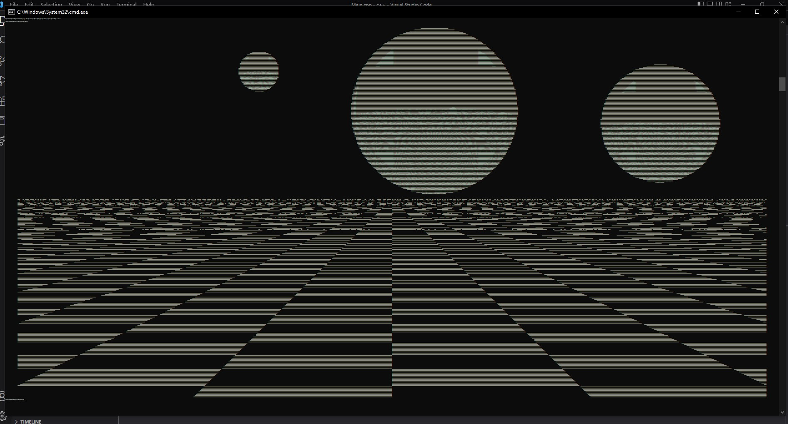

24 years old
born and living in Krimpen aan den IJssel
Studying at Rotterdam university of applied science


24 years old
born and living in Krimpen aan den IJssel
Studying at Rotterdam university of applied science
hover me
During the first 2 years of my study I have done several group project for either external clients or teacher assignments. The projects last between 8 and 16 weeks and were done in groups of 3-5 students.
The first project is an elevator made with arduino's and a dc motor that communicate with eachother through i2c wires. The duration of the project was 8 weeks and the project group consisted of 3 students.
The second project is an ACM or rather a automatic contrainer mover or how we like to call it a little car. It uses 4 dc motors and an esp32. It uses IR and ultrasonic sensors to navigate and has an webinterface to wirelessly controll it. The project lasted 8 week and the project group consisted of 2 students.
The last project of the first year was the ATM. It communicates with ATMs from other project groups using everyones self made API's. It uses an rfid scanner, thermal priner, touchscreen, numpad and is accessible for blind people. It lasted about 12 weeks and the project group consisted of 4 students.
The first project of the second year was the IOT development kit or rather a selfdriving hoverboard thats able to transport items. The goal for this project was to create a solution for markets to automatically transport left over items at the end of each day. We used IR sensors for the surrounding detection and a combination of a digital compas, lora, and gps modules to navigate itself. This project lasted 16 weeks and the project group consisted of 4 students. This project was done for City of things Rotterdam.
The last project of the second year I worked on with my project group is the Sensor solution for windtunnels. In this project we use a windsensor to wirelessly send data to a webapp. We do this to help analysts to analyze the behaviour of wind and sand around miniature dunes inside a windtunnel made by in previous project by students. The project lasted 12 weeks in a project group of 4 students. This project was done for COP Hoogwaterveiligheid
During year 3 and 4 of my study I have done different projects compared to the first 2 year. In this time I have done my internship, minor and my TINLABS. Tinlabs are classes which take an entire cemester where you will be going in more depth into specific topics compared to other classes or projects. The Tinlabs I have done are Embedded sytems and Articial Intelligence
During the first half of my 3rd year I have done my internship at PulsAqua. Here I have worked on a prototype which listens to bird noises and uses AI to identify them. This prototype will become a module for a larger IOT measurement project which utilizes multiple plug and play modules for different kind of measurements. This internship lasted 16 weeks
The project done for my minor: Embedded systems. The project is an automatic LUDO game. A version of this game was given to us by the product owner and our task was to add some features such as: Game state saving and loading and making it modular so in the future many different kinds of games other than LUDO can be played on it. The final version we submitted had the ability to save and load game states in order to do this we had to rewrite a big part of the code. Also some of the hardware was updated so it's compatible for different board games in the future. This project took 16 weeks and was done in a project group of 5 students and was done for the company ALTEN.
A small project for class hardware and sensor calibration/configuration. It detects your heart rate and blood pressure and visualizes it using LED's
Small IOT project + tutorial I made for elective IOT datascience github
Visual of 2 planets using openGL for the class computer graphics
Visual of a well in a grass field using blender for the class computer graphics
Raytracer in c++ github
OOP Administration in Java github
OOP multi threading haven simulation. github
Custom OOP linkedlist in Java github
2d array graphic in C github
3d Simulation of airport transportation I made for the class Modeling and simulation.
Here are some smaller projects and exercises I have done during non project class